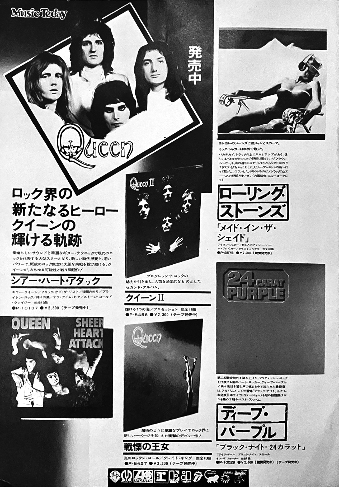
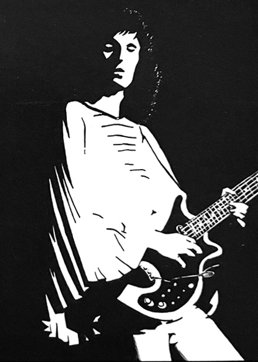
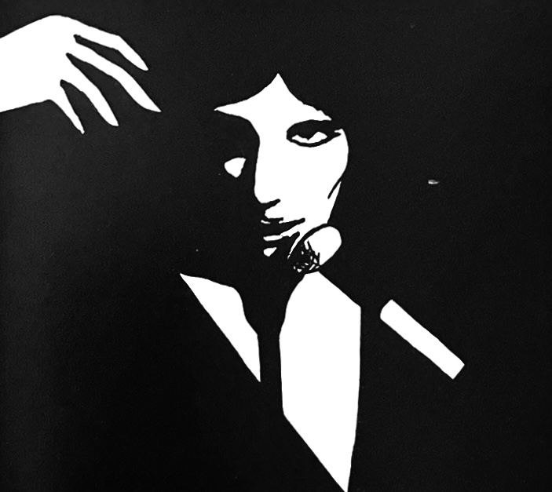

Vol. 1 — Autumn 1975
The inaugural issue contains short introductions of each member, pictures from their 1975 Japanese tour earlier that spring, and information on upcoming releases and tour plans. There's also several sections that would become regular features of the Japanese fan club magazines, such as lyrics and prior magazine interviews translated into Japanese, a letters section, sheet music, and a penpal section. An announcement section notes that fan club members up to #3761 will need new membership cards, which means that's how many members the QFCJ boasted prior to its dissolution.
Regarding merchandise, there was a giveaway of 100 of the flexidiscs that came with an October 1975 issue of Music Life magazine. Stickers, t-shirts, bags, a poster, a photobook, and a 1976 "Queen On Stage" calendar are all listed as available. Included near this section is this want ad:

This early live LP was probably a copy of Sheetkeeckers, but also could've been A Beautiful Album or Queen Live in Kove, both of which are worth orders of magnitude more than any tour pamphlet today.
The Four Members of Queen are Unusually Friendly and Nice — Ikuzo Orita of Warner Pioneer Records
A Peek into the Recording of the New Album